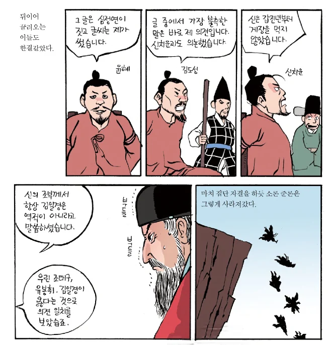

죽음이 두려운 사람
방패 하나 믿고 왕 옆에서 싸움
죽음이 두렵지 않은 사람

원코인으로 왕 앞에서 티배깅 갈김
죽음이 두려운 사람
방패 하나 믿고 왕 옆에서 싸움
죽음이 두렵지 않은 사람

원코인으로 왕 앞에서 티배깅 갈김


즈어어언하~ 죽여보시옵소서~ 느그애비는 안이랬었는데 븅신새끼 즈으으은하~
항우가 관중 땅을 버리고 고향인 팽성으로 돌아가려 하자,
한 선비(한생)가 “초나라 사람은 원숭이가 관을 쓴 것일 뿐이라더니 과연 그렇구나”라고 비꼬았다가
항우에게 삶아 죽임을 당했습니다.
나관중이랑 사이 안좋나보네 ㄷㄷ
인간 탕국
고향이 팽성이라 그런가 삶아 죽이네
그시절 트렌드인가봐 초한지는 삶아죽이기가 자주나오더라
삼국지와도 결이 다른 진짜 야만의 시대
수육장인 항우
처벌명은 팽형인데 기름에 튀겼다는 이야기도 있음
튀김장인 항우

아 시발 통촉 하시라고
신갑게 ㅋㅋㅋ
숙종도 엄청난 다혈질 아녓나 ㅋㅋㅋㅋ
설마 안죽겠어 하고 저걸 질렀다고?
인간은 기억력이 안좋은가 보다
조선이 어떻게 건국된 나란지를 잊고 저지랄을 하는걸 보니...
이미 죽일껄로 다 결론 난 상태에서 죄를 자복하라고 하닌까 지른거임
저거 영조임
저거 영조야..
물론 아빠 피는 어디 안감 ㅋㅋ
목숨 하나인데, 절대왕권주의 나라에서
아들은 직접 죽이고 과거에 형도 죽인 의혹이 있는 정신병 max 왕 앞에서 디스랩함 ㄷㄷㄷ
임금이 내사복(內司僕)에 나아가 친히 국문하였는데, 역적 윤혜(尹惠)가 복주(伏誅)되었다. 윤혜의 문서에 열성(列聖)의 어휘(御諱)가 한 종이에 나란히 쓰여 있는 것이 있어 임금이 놀라고 통분해 그 까닭을 국문하니, 윤혜가 공초하기를,
"제 아들의 이름을 지을 때에 상고하느라 썼습니다."
하니, 임금이 진노하여 주장(朱杖)으로 때리게 하였으나 윤혜는 혀를 깨물고 말을 하지 않았다.
영조실록84권, 영조 31년 5월 6일 기묘 1/3 기사
/ 1755년 청 건륭(乾隆) 20년
==================
신치운(申致雲)을 신문하였다. 처음에 김도성(金道成)이 공초하기를,
"심정연(沈鼎衍)의 흉서는 실로 신치운과 함께 의논하여 한 것입니다."
하고, 또 역적 이준(李埈)의 문서 가운데도 신치운을 칭찬하는 말이 많이 있어 이때에 이르러 형신하니, 공초하기를,
"윤상백(尹尙白)을 끊어버리지 못한 것이 신의 죄입니다."
하니, 임금이 말하기를,
"나라에서 죄를 씻어줌이 너 역시 지극하였다고 할 것이다. 네가 승지로 있었을 때 내가 늙은 것을 민망히 여겨 여러 해 동안 침체되었다는 하교까지 있었으니, 마땅히 감읍(感泣)했어야 했는데도 너는 얼굴도 꿈쩍하지 않아 내가 그때에 이미 네 마음을 알았었다."
하니, 신치운이 말하기를,
"성상께서 이미 이처럼 의심하시니, 신은 자복을 청합니다. 신은 갑진년부터 게장을 먹지 않았으니 이것이 바로 신의 역심(逆心)이며, 심정연의 흉서 역시 신이 한 것입니다."
하니, 임금이 분통하여 눈물을 흘리고, 시위(侍衛)하는 장사(將士)들도 모두 마음이 떨리고 통분해서 곧바로 손으로 그의 살을 짓이기고자 하였다.
영조실록84권, 영조 31년 5월 20일 계사 2/4 기사
/ 1755년 청 건륭(乾隆) 20년
이해안되는 사람들을 위해 잠깐 설명
저 사람들이 영조 까는 글을 벽보에 붙였다가 붙잡혀갔는데
어차피 뒤질꺼 티배깅한거임
영조의 형이 게장과 생감먹고 죽었는데 영조가 형에게 게장먹여서 독살했다 라고 의심했음
그래서 난 게장 안머거~한거임
초인목후이관!!
궁금해서 찾아보니까 저 윤혜라는 사람도 대단하네..
과거 시험장에서 나라 비판하는 글 쓰고 왕들 본명 차례대로 쓴 다음
그거 내 아들 이름 짓느라 고민했던 흔적이오
단순 조롱을 넘어서서
너 전왕 암살했던 암살범이잖아? 우린 너 왕으로 인정안해. 라고 면전에서 해버리는 경우여서
저거 왕으로써 안죽일수없는 수준...
진짜 셀프 자살시도나 마찬가지
진짜 어떻게 저럴 수 있었을지
하긴 죽을 각오면 뭔 말을 못하겠냐 ㅋㅋ
뭘해도 죽을지경이여서 어차피가는거 질러보고 죽자 해서 저렇게 됬다던데
어차피 죽을거면 한번 긁고 죽는것도 나쁘진 않지
내가 지금부터 조롱 존나할건데 나 죽이면 암군인거 알지? 시발아 죽여봐
-종료(자연사)-